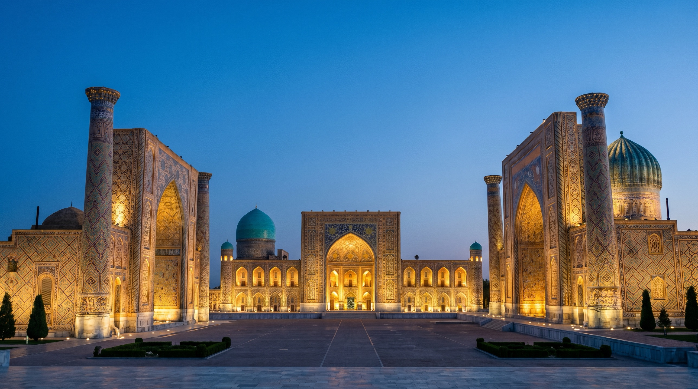

<title>Samarkand</title>
<link rel="preconnect" href="https://fonts.googleapis.com">
<link rel="stylesheet" href="https://fonts.googleapis.com/css2?family=Cormorant+Garamond:ital,wght@0,500;0,600;1,500&family=Libre+Baskerville:wght@400;700&display=swap">
<style>
/* Layout: a scroll film that walks up the Registan walkway into Tilya-Kori's arch, then an editorial guide to the city below. */
:root{
  --night:#0b1a3a; --lapis:#1e3f8f; --turq:#2a9d9a; --gold:#e8b04a; --sand:#f4ead6;
  --bg:#f6f1e6; --fg:#1a2238; --muted:#55607a; --rule:#d9cdb3; --card:#fffaf0;
  --display:"Cormorant Garamond", "Iowan Old Style", Georgia, serif;
  --body:"Libre Baskerville", Georgia, "Times New Roman", serif;
  --pad:clamp(16px,4vw,64px);
}
@media (prefers-color-scheme:dark){:root:not([data-theme="light"]){--bg:#0d1428;--fg:#efe6d2;--muted:#a9b0c4;--rule:#2a3556;--card:#141d38;color-scheme:dark}}
:root[data-theme="dark"]{--bg:#0d1428;--fg:#efe6d2;--muted:#a9b0c4;--rule:#2a3556;--card:#141d38;color-scheme:dark}
*{box-sizing:border-box}
body{margin:0;background:var(--bg);color:var(--fg);font:16px/1.75 var(--body)}
h1,h2,h3{font-family:var(--display);font-weight:600;line-height:1.05;text-wrap:balance;margin:0}

/* Film */
.film{position:relative;height:420vh;background:var(--night)}
.stage{position:sticky;top:0;height:100vh;height:100svh;overflow:hidden;background:var(--night)}
.stage img{position:absolute;inset:0;width:100%;height:100%;object-fit:cover;object-position:50% 70%;transform-origin:50% 71%;will-change:transform}
.stage::after{content:"";position:absolute;inset:0;pointer-events:none;background:linear-gradient(to bottom,rgba(8,16,40,.55),rgba(8,16,40,0) 38%,rgba(8,16,40,0) 70%,rgba(8,16,40,.6))}
.beat{position:absolute;z-index:2;left:var(--pad);right:var(--pad);top:9vh;text-align:center;color:#fff8ea;opacity:0;transform:translateY(16px);transition:none;text-shadow:0 2px 24px rgba(6,12,30,.6)}
.beat h1{font-size:clamp(56px,11vw,150px);letter-spacing:-.01em}
.beat p{font-family:var(--display);font-size:clamp(24px,3.4vw,46px);font-style:italic;max-width:24ch;margin:0 auto;line-height:1.2}
.beat small{display:block;font:12px/1.4 var(--body);letter-spacing:.22em;text-transform:uppercase;color:var(--gold);margin-top:14px}
.hint{position:absolute;z-index:2;bottom:calc(20px + env(safe-area-inset-bottom,0px));left:0;right:0;text-align:center;color:#fff8ea;font-size:12px;letter-spacing:.2em;text-transform:uppercase;opacity:.8}

/* Guide */
main{max-width:1120px;margin:0 auto;padding-inline:var(--pad);padding-block:96px 64px;display:grid;gap:96px}
.lede{display:grid;grid-template-columns:1fr 1.3fr;gap:48px;align-items:start}
.lede h2{font-size:clamp(40px,6vw,76px)}
.lede p{margin:0 0 1em;max-width:62ch}
.lede > *{min-width:0}
.sec h2{font-size:clamp(34px,4.6vw,56px);margin-bottom:28px}
.sites{display:grid;grid-template-columns:repeat(auto-fit,minmax(min(100%,320px),1fr));gap:1px;background:var(--rule);border:1px solid var(--rule)}
.site{background:var(--bg);padding:28px;display:grid;gap:8px;align-content:start}
.site h3{font-size:30px}
.site .when{font-size:13px;color:var(--gold);font-variant-numeric:tabular-nums;letter-spacing:.06em}
.site p{margin:0;color:var(--muted)}
:root .site .when{color:#a8741a}
@media (prefers-color-scheme:dark){:root:not([data-theme="light"]) .site .when{color:var(--gold)}}
:root[data-theme="dark"] .site .when{color:var(--gold)}
.timeline{display:grid;gap:0;border-top:1px solid var(--rule)}
.row{display:grid;grid-template-columns:120px 1fr;gap:24px;padding:18px 0;border-bottom:1px solid var(--rule)}
.row b{font-family:var(--display);font-size:26px;font-variant-numeric:tabular-nums;font-weight:600}
.row p{margin:0;max-width:64ch}
.visit{display:grid;grid-template-columns:repeat(auto-fit,minmax(min(100%,240px),1fr));gap:32px}
.visit h3{font-size:24px;margin-bottom:6px}
.visit p{margin:0;color:var(--muted)}
.closing{background:var(--night);color:var(--sand);padding:56px var(--pad);text-align:center;border-radius:2px}
.closing h2{font-size:clamp(34px,5vw,60px);color:#fff8ea}
.closing p{max-width:52ch;margin:16px auto 0;color:#cfd6ea}
footer{max-width:1120px;margin:0 auto;padding:0 var(--pad) 48px;color:var(--muted);font-size:13px}
@media (max-width:760px){.lede{grid-template-columns:1fr;gap:20px}.row{grid-template-columns:72px 1fr;gap:14px}}
@media (prefers-reduced-motion:reduce){
  .film{height:auto}.stage{position:relative;height:auto;min-height:100svh;display:grid;align-content:start;gap:24px;padding:12vh var(--pad) 48px}
  .beat{position:relative;left:auto;right:auto;top:auto;opacity:1;transform:none}.stage img{transform:none!important}.hint{display:none}
}
</style>

<section class="film" id="film" aria-label="A walk up the Registan, Samarkand">
  <div class="stage">
    
    <div class="beat" data-in="0" data-out=".26"><h1>Samarkand</h1><small>Uzbekistan · on the Silk Road</small></div>
    <div class="beat" data-in=".3" data-out=".55"><p>For 2,750 years, caravans crossed this square.</p></div>
    <div class="beat" data-in=".6" data-out=".82"><p>Three madrasahs face each other across the Registan.</p></div>
    <div class="beat" data-in=".86" data-out="1.01"><p>Step into Tilya-Kori, the gilded one.</p><small>Built 1646–1660</small></div>
    <div class="hint" id="hint">Scroll to walk in</div>
  </div>
</section>

<main>
  <section class="lede">
    <h2>A city as old as Rome</h2>
    <div>
      <p>Samarkand was already a walled city called Marakanda when Alexander the Great took it in 329 BC. It sat where the Silk Road's routes from China, India and Persia met, and grew rich on paper, silk and glass.</p>
      <p>Genghis Khan destroyed it in 1220. Timur, known in Europe as Tamerlane, rebuilt it in the 1370s as his capital and filled it with the turquoise domes the city is still known for. UNESCO listed it in 2001 as "Samarkand – Crossroad of Cultures".</p>
    </div>
  </section>

  <section class="sec">
    <h2>What to see</h2>
    <div class="sites">
      <article class="site"><span class="when">1417–1660</span><h3>Registan</h3><p>The city's old public square, framed by three madrasahs: Ulugh Beg (1417–1420), Sher-Dor (1619–1636), with its tiger-and-sun mosaics, and Tilya-Kori (1646–1660), whose mosque is lined with gold leaf.</p></article>
      <article class="site"><span class="when">1403–1404</span><h3>Gur-e-Amir</h3><p>Timur's mausoleum, under a ribbed turquoise dome. He lies beneath a slab of dark green jade, near his grandson Ulugh Beg. Its design influenced the Taj Mahal.</p></article>
      <article class="site"><span class="when">11th–19th c.</span><h3>Shah-i-Zinda</h3><p>An avenue of more than twenty mausoleums climbing a hillside, with some of the finest glazed tilework in Central Asia.</p></article>
      <article class="site"><span class="when">1399–1404</span><h3>Bibi-Khanym Mosque</h3><p>Timur's great congregational mosque, among the largest of its age. Its portal rises about 35 m.</p></article>
      <article class="site"><span class="when">1420s</span><h3>Ulugh Beg Observatory</h3><p>Built by the astronomer-ruler Ulugh Beg. A buried arc of its giant sextant survives; his star catalogue listed 1,018 stars.</p></article>
      <article class="site"><span class="when">Daily</span><h3>Siab Bazaar</h3><p>Beside Bibi-Khanym. Round stamped Samarkand non bread, dried apricots, almonds and halva.</p></article>
    </div>
  </section>

  <section class="sec">
    <h2>Twenty-seven centuries</h2>
    <div class="timeline">
      <div class="row"><b>c. 700 BC</b><p>A settlement at Afrasiyab, the hill north of today's centre, becomes Marakanda, capital of Sogdiana.</p></div>
      <div class="row"><b>329 BC</b><p>Alexander the Great captures the city.</p></div>
      <div class="row"><b>751</b><p>After the Battle of Talas, papermaking reaches Samarkand from China. The city's paper becomes famous across the Islamic world.</p></div>
      <div class="row"><b>1220</b><p>Genghis Khan's army sacks the city.</p></div>
      <div class="row"><b>1370</b><p>Timur makes Samarkand his capital and brings in craftsmen from every land he conquers.</p></div>
      <div class="row"><b>1420s</b><p>Ulugh Beg builds his madrasah and observatory.</p></div>
      <div class="row"><b>2001</b><p>UNESCO lists the historic city as a World Heritage Site.</p></div>
    </div>
  </section>

  <section class="sec">
    <h2>Visiting</h2>
    <div class="visit">
      <div><h3>Getting there</h3><p>The Afrosiyob high-speed train runs from Tashkent in about 2 hours 10 minutes.</p></div>
      <div><h3>When to go</h3><p>April–May and September–October. Summer days often pass 35 °C.</p></div>
      <div><h3>See it at night</h3><p>The Registan is floodlit after dark, the way it looks in the film above.</p></div>
    </div>
  </section>

  <section class="closing">
    <h2>Stand in the middle of the Registan</h2>
    <p>Turn slowly. Every surface around you is tile, and each of the three portals was built by a different ruler.</p>
  </section>
</main>
<footer>Made for the TIS Tech Council. The photo of the Registan was supplied by the team.</footer>

<script>
(() => {
  const film = document.getElementById('film'), img = film.querySelector('img'),
        beats = [...film.querySelectorAll('.beat')], hint = document.getElementById('hint');
  if (matchMedia('(prefers-reduced-motion: reduce)').matches) return;
  const ease = t => t < .5 ? 2*t*t : 1 - Math.pow(-2*t+2, 2)/2;
  let raf = 0;
  function frame() {
    raf = 0;
    const r = film.getBoundingClientRect(), span = film.offsetHeight - innerHeight;
    const p = Math.min(1, Math.max(0, -r.top / span));
    const e = ease(p);
    // Walk up the walkway, then push into the arch; lift the focus toward centre as we go
    img.style.transform = `translateY(${-e*9}vh) scale(${1 + e*1.9})`;
    for (const b of beats) {
      const a = +b.dataset.in, z = +b.dataset.out, ramp = .04;
      let v = p < a || p > z ? 0 : Math.min(1, (p - a)/ramp, (z - p)/ramp);
      if (a === 0 && p < ramp) v = 1;
      b.style.opacity = v; b.style.transform = `translateY(${(1-v)*16}px)`;
    }
    hint.style.opacity = p > .03 ? 0 : .8;
  }
  const req = () => raf || (raf = requestAnimationFrame(frame));
  addEventListener('scroll', req, {passive:true}); addEventListener('resize', req); frame();
})();
</script>
